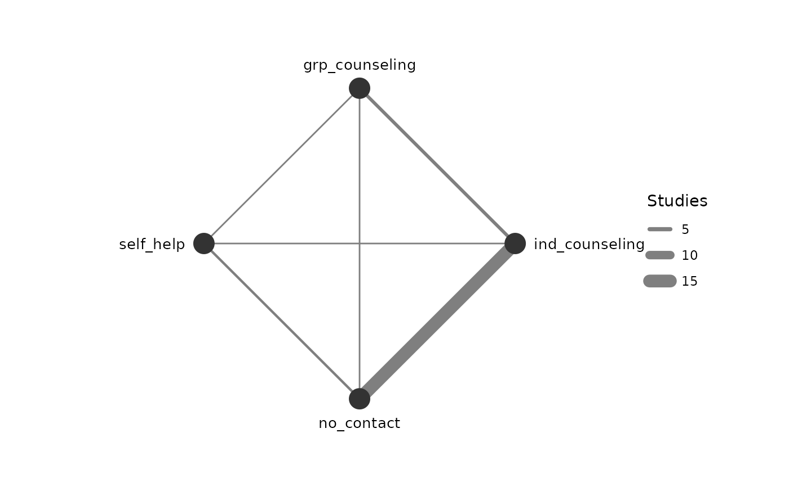
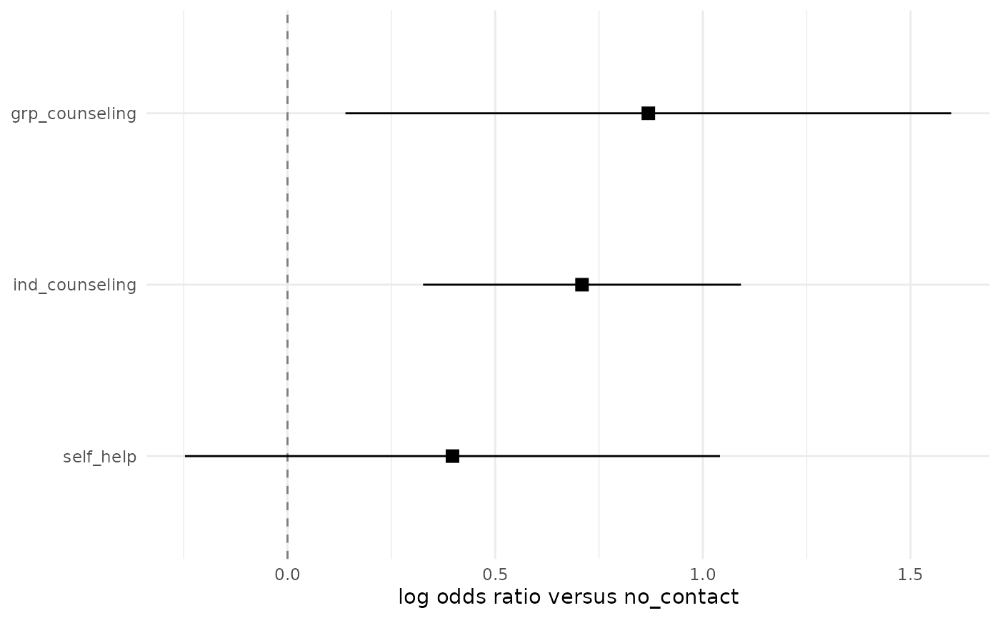

autoplot() method for <meta_nma> objects.
type = "netgraph" draws the network with treatments on a circle and
edge widths proportional to the number of studies making each direct
comparison. type = "forest" shows every treatment against the
reference, ordered by P-score.
Examples
pw <- meta_pairwise(smoking_cessation, study = study, treatment = trt,
measure = "OR", event = xi, n = ni)
nma <- meta_network(pw, study = study, treat1 = treat1, treat2 = treat2,
reference = "no_contact", small_values = "bad")
autoplot(nma)

autoplot(nma, type = "forest")
